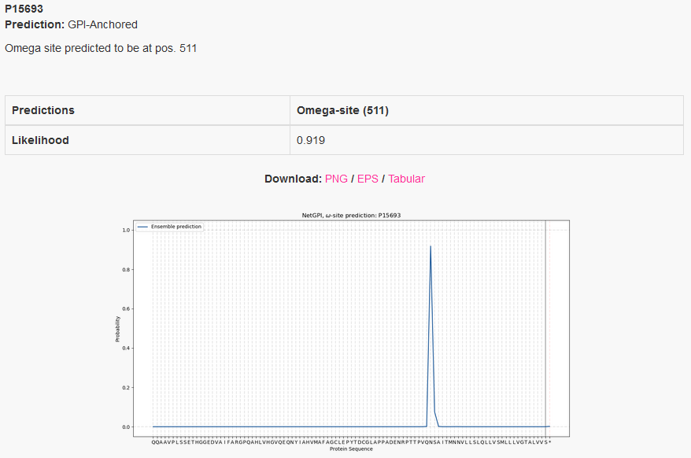

NetGPI-1.1
Summary of 2 predicted sequences
Predictions list. Use the instruction page for more detailed description of the output page.
Download:
Predicted proteins
C_albicans_ALS1
Prediction: GPI-Anchored
S residue omega-site predicted at position 1239.
| Predictions | Omega-site, pos:1239, resdue:S |
|---|---|
| Likelihood | 0.429 |


Instructions
1. Specify the input sequences
All the input sequences must be in one-letter amino acid code. The allowed alphabet (not case sensitive) is as follows:
All the alphabetic symbols not in the allowed alphabet will be converted to X before processing. All the non-alphabetic symbols, including white space and digits, will be ignored.
The sequences can be input in the following two ways:
-
Paste a single sequence (just the amino acids) or a number of sequences in
FASTA
format into the upper window of the main server page.
- Select a FASTA file on your local disk, either by typing the file name into the lower window or by browsing the disk.
Both ways can be employed at the same time: all the specified sequences will
be processed. However, there may be not more than 5,000 sequences in one submission. The sequences
may not be longer than 10,000 amino acids.
2. Customize your run
Generating figures for a large number of samples takes much longer than executing a prediction. Consider using the short option for large sample batches.- Output format:
You can choose between two output formats:- Long
- Appropriate for most users. Shows one plot and one summary per sequence.
- Short
- Convenient if you submit lots of sequences. Shows only one line of output per sequence and no graphics.
3. Submit the job
Click on the "Submit" button. The status of your job (either 'queued' or 'running') will be displayed and constantly updated until it terminates and the server output appears in the browser window.At any time during the wait you may enter your e-mail address and simply leave the window. Your job will continue; you will be notified by e-mail when it has terminated. The e-mail message will contain the URL under which the results are stored; they will remain on the server for 24 hours for you to collect them.
Example Outputs
By default the server produces the following output for each input sequence. The example below shows the output for intestinal-type alkaline phosphatase 1, taken from the Uniprot entry PPBI1_RAT. The lipidation position prediction is consistent with the database annotation.One annotation is attributed to each protein, the one that has the highest probability. If the highest probability is within the amino-acid sequence, then it is considered GPI-anchored and the amino-acid position at the peak is the predicted omega-site. If the highest probability is at the sentinel, here represented by *, then the protein is considered non GPI-anchored.
If a GPI-anchor is predicted, the omega-site position is reported as well.
On the plot we see the likelihood distribution over the protein sequence, with the added sentinel *. Only the last 100 amino-acids are considered.
Example: Mature protein - standard output format
